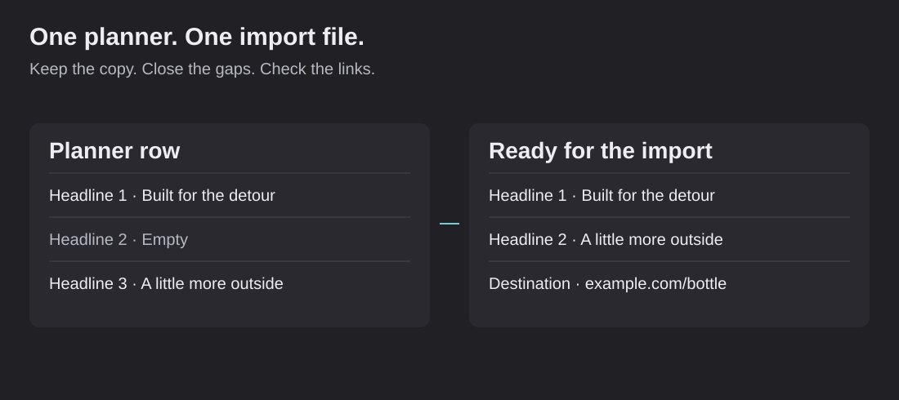

Stop entering the same ad data twice
A tool that turns an ad planner into a file ready for the launch tool.

Ad planning and ad launching can require the same information in different places. Someone prepares the copy and assets in a planner, then someone types or pastes them again into a launch tool. That repeated work creates opportunities for mistakes.
I worked on a mapper that reads planner data and produces the import file the launch tool expects. It is a small tool with a specific purpose: make a repeated handoff faster and more consistent.
Build for the actual import format
The tool was built against the fields in the import interface, not a guessed generic spreadsheet. It supports client configuration, naming rules and the expected copy, link and asset fields.
The source can contain multiple primary-text options, headlines, descriptions and assets. The output puts those values into numbered columns. Destination links, display links, tracking parameters and calls to action are mapped too.
This is the part of automation that often gets missed. A CSV can be perfectly valid and still fail the job if its column names, allowed values or asset links do not match the receiving tool.
Handle the messy rows
Planner rows are not always tidy. A person may fill primary-text option one and three while leaving option two empty. The mapper compacts those numbered fields so the output does not contain an unnecessary gap. It preserves the content, including punctuation and emoji, rather than silently rewriting approved copy.
Assets have their own traps. Using one shared folder for several ads can make the import tool attach the same contents to all of them. Per-file links or one folder per ad are clearer. The tool's documentation also records a GIF-format limitation: a mapped image format may need manual review and a different launch format.
I want those limits surfaced before launch, not discovered after the wrong creative has been attached.
Try converting two sample ads
The public example contains two invented ads for Juniper Supply. One deliberately skips a numbered headline field. The mapper compacts the fields and lets you download the CSV. You can also break a destination URL and see the validation stop the export.
The interactive example demonstrates field mapping, validation and CSV export. It gives a reviewer a practical way to inspect the handoff from a planner to an import file.
What I check before calling an import ready
Scroll sideways to see all columns.
| Check | Why it matters |
|---|---|
| Correct destination | A good ad still fails if it sends someone to the wrong page |
| Copy kept intact | An approved message should not change while moving between tools |
| Numbered fields filled without gaps | Importers can interpret missing options differently |
| Assets belong to this ad | Shared folders can create unintended creative combinations |
| Format and call to action supported | The receiving tool has its own allowed values |
| Preview reviewed | Confirm the final creative, copy and destination together |
The public version also quotes CSV values properly and treats spreadsheet-like formula text as text. That keeps an example download predictable when someone opens it in a spreadsheet.
My contribution
I identified the repeated work, inspected the actual launch requirements and directed the mapping behavior. I worked with AI on the implementation, then checked the field layout and documented the cases that still need a person.
This is an example of choosing a narrow, useful automation. It does not need an elaborate AI experience to help someone. The user wants a file that imports correctly and a warning when something needs fixing.
Why I built it
I built around the actual import fields, including the names, copy, links and assets. The details matter because a file that looks right can still launch the wrong ad.
The mapper replaces repeated data entry with a consistent handoff. It preserves approved copy, organizes the expected fields and catches problems before the file reaches the launch tool.